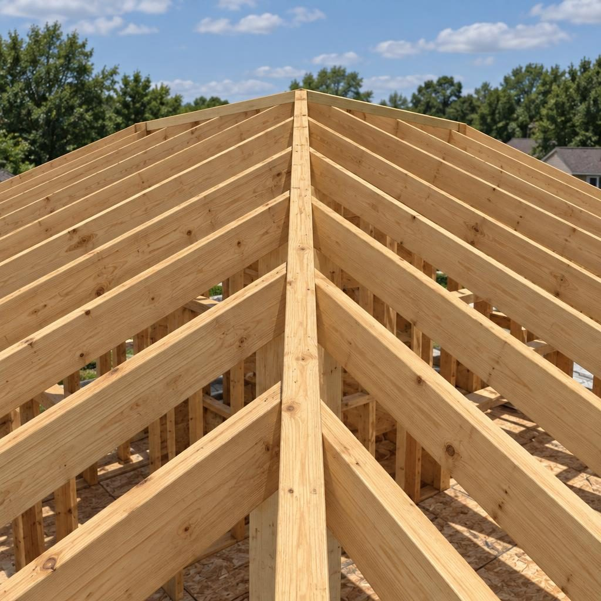
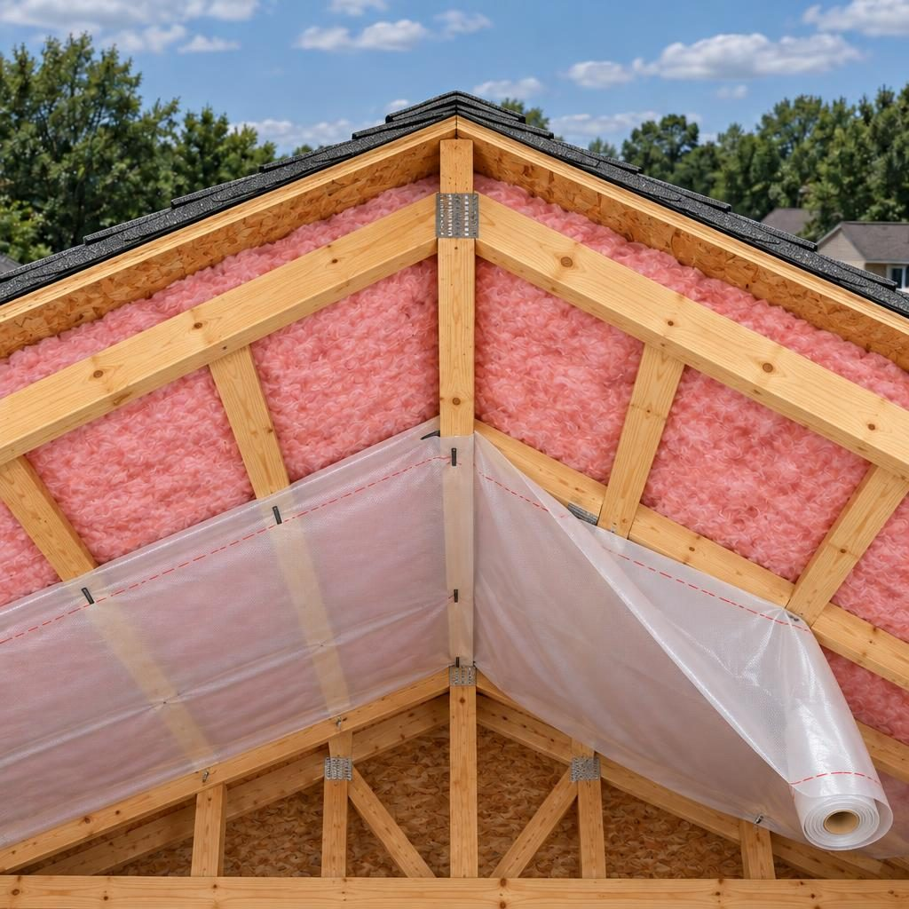

Főoldal / Tetőszerkezet
Erős váz,jó tető,hosszú évek.
Ács- és tetőfedő munka, fóliák, hőszigetelés és bádogozás egy kézből.
Mit építünk
A tető, amit nem látsz, de minden évben megérzel
A tető élettartamát a szerkezet dönti el. Szarufa, szelemen, gerinc, fóliák és hőszigetelés: ezekből áll össze az, ami a fedés alatt van. Ha ez rendben van, a cserép vagy a napelem is hosszú évekig jól áll rajta.
- 01FelmérésMegmérjük a szarufákat, megnézzük az állapotukat és a kötéseket. A hó- és szélteher alapján eldől, mi maradhat.
 AI által generált kép
AI által generált kép - 02Szarufa, szelemen, gerincMéretezés a hó- és szélteherhez, szakszerű kötések, kezelt faanyag.AI által generált kép
- 03Fóliák és hőszigetelésAlulról a párazáró fólia, a szarufák között a hőszigetelés, gondosan lezárt illesztésekkel.

AI által generált kép - 04Lécezés és szellőzésAlátétfólia, ellenléc és léc pontos osztással, hogy a fedés szellőzzön és szépen feküdjön.
 AI által generált kép
AI által generált kép - 05Bádogszegélyek, ereszcsatornaKémény, ereszcsatorna, élszarufa: méretre hajlított lemezzel, nem készletből illesztve.
 AI által generált kép
AI által generált kép
Görgess lefelé · a tető szétnyílik · alulról felfelé építkezünk
Hét réteg a szarufától a cserépig

Mi tudjuk, mi kell a jó tetőhöz!
Egy megfelelően kivitelezett szerkezet, és rajta energia a napból!
Kérdések
Tetőszerkezet: amit érdemes tudni
Mikor kell a szarufákat cserélni?
Ha a faanyag korhadt vagy rovarfertőzött, vagy a keresztmetszet nem bírja a terhelést. A felmérésen megnézzük, sokszor elég a pontszerű javítás.
Mekkora hajlásszög kell?
A fedéstől függ: cserépnél általában meredekebb, lemeznél lankásabb tető is lehet. A gyártó előírása és a tető terve dönt.
Kell építési engedély a tetőcseréhez?
Az eset dönti el: szerkezetet érintő átalakításnál, tetőtér-beépítésnél vagy védett épületnél más szabályok vonatkozhatnak. Az ügyintézésben segítünk.
Mennyi ideig tart?
Egy családi ház tetőcseréje jellemzően néhány munkanaptól egy-két hétig tart, a mérettől és az időjárástól függően.
Mi védi a házat, amíg a fedés le van bontva?
Szakaszosan dolgozunk, a bontott felületet még aznap letakarjuk, esőre mindig felkészülünk.
Cserép vagy lemez: melyiket válasszam?
A cserép hosszú élettartamú és hagyományos megjelenésű, de nehezebb. A lemez könnyebb, gyorsabban lerakható és általában kedvezőbb árú, esőben viszont hangosabb, ezért szigetelésre külön figyelni kell.
Gyors árbecslő
Pár másodperc alatt ad egy tájékozódó sávot
Válaszd ki a munkát, húzd a csúszkát, és látod a nagyságrendet. A pontos, tételes ajánlatot a helyszíni felmérés után kapod.
Beszéljünk a tetődről
A helyszíni felmérés ingyenes, a válaszra 24 órán belül jelentkezünk.